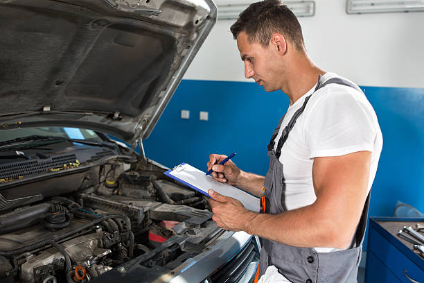

Nossos Serviços

Modificação de Motor
Aumente a potência e o desempenho do motor, proporcionando uma experiência de condução mais emocionante e personalizada.
- Reprogramação da ECU para otimização de performance
- Instalação de turbo e supercharger
- Melhoria no sistema de exaustão
- Upgrade de componentes internos do motor

Troca de Óleo
Mantenha o motor do veículo funcionando de maneira eficiente e prolongue sua vida útil com a troca regular de óleo.
- Utilização de óleos de alta qualidade
- Verificação e substituição do filtro de óleo
- Inspeção de outros fluidos do motor
- Serviço rápido e eficiente

Revisão Completa
Garanta que todas as partes do veículo estejam funcionando corretamente, identificando e corrigindo problemas potenciais.
- Inspeção completa de todos os sistemas do veículo
- Diagnóstico de problemas mecânicos e elétricos
- Substituição de peças desgastadas
- Teste de desempenho após a revisão

Pintura Automotiva
Renove a aparência do seu veículo com serviços de pintura de alta qualidade.
- Pintura completa do veículo
- Correção de arranhões e amassados
- Aplicação de verniz protetor
- Personalização de cores e designs